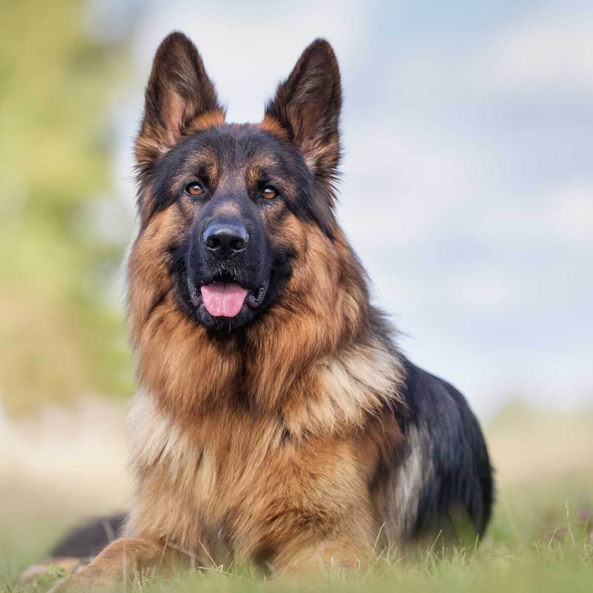
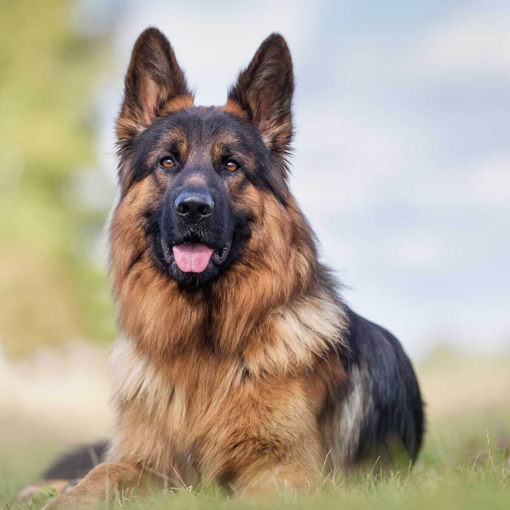
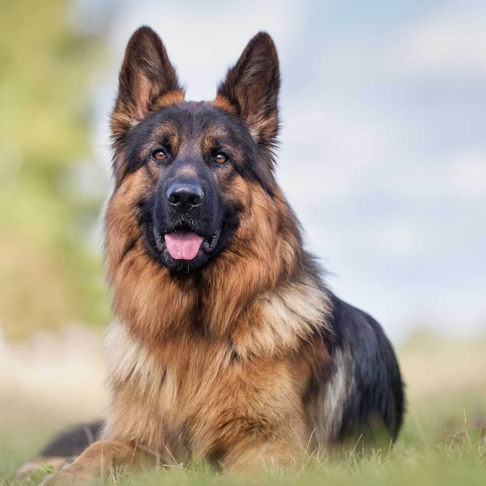

We all know about dogs, The dog was the first species to be domesticated, by hunter–gatherers over 15,000 years ago, before the development of agriculture. Their long association with humans has led dogs to be uniquely adapted to human behavior, leading to a large number of domestic individuals and the ability to thrive on a starch-rich diet that would be inadequate for other canids.
The dog has been selectively bred over millennia for various behaviors, sensory capabilities, and physical attributes. Dog breeds vary widely in shape, size, and color. They perform many roles for humans, such as hunting, herding, pulling loads, protection, assisting police and the military, companionship, therapy, and aiding disabled people. This influence on human society has given them the sobriquet of "man's best friend." The Cretaceous–Paleogene extinction event occurred 65 million years ago and brought an end to the dinosaurs and the appearance of the first carnivorans.The name carnivoran is given to a member of the order Carnivora. Carnivorans possess a common arrangement of teeth called carnassials, in which the first lower molar and the last upper premolar possess blade-like enamel crowns that act similar to a pair of shears for cutting meat. This dental arrangement has been modified by adaptation over the past 60 million years for diets composed of meat, for crushing vegetation, or for the loss of the carnassial function altogether as in seals, sea lions, and walruses. Today, not all carnivorans are carnivores, such as the insect-eating Aardwolf.
The carnivoran ancestors of the dog-like caniforms and the cat-like feliforms began their separate evolutionary paths just after the end of the dinosaurs. The first members of the dog family Canidae appeared 40 million years ago,of which only its subfamily the Caninae survives today in the form of the wolf-like and fox-like canines. Within the Caninae, the first members of genus Canis appeared six million years ago, the ancestors of modern domestic dogs, wolves, coyotes, and golden jackals.

Facilities
There is a running area where dogs can play and run in full freedom, Sleeper is available for the comfortoness of dogs, Treatments of dogs is also available if they were ill, One worker is 24 hours available on the site of dogs, Gromming service is available near the site, There is also bathing facilities where dogs can bath, Facilities of food is also provided for 4 times etc.
About Founder
Piyush Kumar
I am Piyush and I am from Patna, but currently i am in Bhopal Madhyapradesh, I am persuing my BTech degree from Technocrats Institute of Technology. Branch - Computer Science. I created this website for the protection of dogs who is facing problem for foods and water on the street.
 
